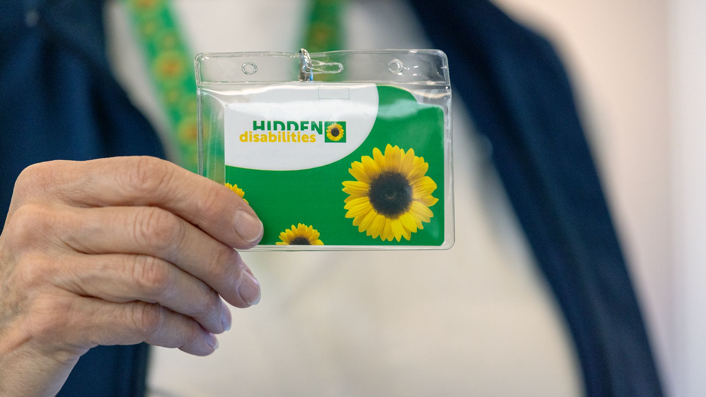

What's open at T4
The food got better. Then it got bigger.
Sample editorial copy: a tour of the T4 dining program after the 2024 expansion — chef-driven openings, late-night hours, and what to skip.
Read →

Six terminals, every airline, every borough an hour away. 612 flights today.
JFK belongs to New York the way Penn Station belongs to it — utilitarian, crowded, full of people pretending to read. We don't pretend to be a destination. We pretend to be a ferry terminal that happens to fly.
That said, the food is good now, the bathrooms are mostly clean, and the AirTrain runs on time. The construction is real (it's a $19B redevelopment running through 2028) and we'll tell you exactly what's open and what's moved.

Sample editorial copy: a tour of the T4 dining program after the 2024 expansion — chef-driven openings, late-night hours, and what to skip.
Read →Sample editorial copy: the Q3 bus, the LIRR connection, the math of when subway-plus-AirTrain beats a yellow cab.
Read →
Sample editorial copy: how the Sunflower program works at JFK, which terminals are trained, and where to pick one up.
Read →Live conditions, updated every minute. See the full status board →

Most of the airport works most of the time. Some of it is being rebuilt. Through 2028, expect new pickup zones, rerouted roadways, and eventually two new terminals. It's loud. It's worth it.
Find your flight, reserve parking, plan your ride. Or just see what's open today.